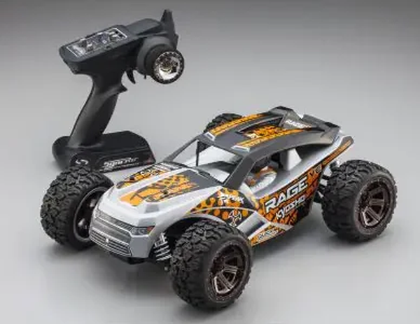

京商 EP Fazer Rage VE

引用元画像：rcscrapyard.net
📋 基本情報
| メーカー | 京商（Kyosho） |
|---|---|
| 機種名 | EP Fazer Rage VE |
| シャーシ略称 | EP Fazer Rage VE |
| 型番 | 30992T1J |
| 発売時期 | 2013年9月 |
| 価格 | ¥37,400（税込） |
| 生産状況 | 生産終了 |
| カテゴリー | ラジコンカー（1/10スケール 電動トラック） |
| サブカテゴリー | 4WD 電動トラック（オフロード） |
| シリーズ | Fazer ReadySetシリーズ |
📏 シャーシスペック
| 全長 | 395mm |
|---|---|
| 全幅 | 287mm |
| 全高 | 152mm |
| ホイールベース | 272mm |
| トレッド（F/R） | フロント213mm / リヤ206mm |
| タイヤ（F/R） | フロント・リヤ共 Φ101mm × 50mm |
| ギヤレシオ | 9.62:1 |
| 全備重量 | 約1,764g |
| シャーシ | モールドプラスチックバスタブシャーシ |
| ベアリング | フルボールベアリング標準装備 |
⚙️ 駆動系
| 駆動方式 | シャフトドライブ4WD |
|---|---|
| デフギヤ | ギヤデフ |
| ドライブシャフト | ドッグボーンドライブシャフト |
| モーター | Team Orion Brushless Motor NEON ONE (KV-2400)標準装備 |
| R/Cシステム | Syncro KT-200送信機標準装備 |
🔧 サスペンション
| 形式 | 4輪ダブルウィッシュボーン独立懸架 |
|---|---|
| ダンパー | コイルスプリングオーバーオイルダンパー×4本 |
📦 ReadySetキット内容
- R/Cユニット組み込み済み工場完成シャーシ
- 組み立て済みボディ（塗装・デカール済み）
- Syncro KT-200送信機
- 7.2V-1800mAhバッテリー
- ACチャージャー
- 六角レンチ（1.5mm）
- 十字レンチ
別途必要なもの
- 送信機用単3乾電池×4本
💡 特徴
Fazerシリーズの電動4WDトラック
- 2013年発売、京商の電動オフロードトラック
- ReadySetモデルで開封後すぐに走行可能
- シャフトドライブ4WD方式で高い駆動効率
- フルボールベアリング標準装備で滑らかな動き
高性能ブラシレスモーター標準装備
- Team Orion NEON ONE ブラシレスモーター（KV-2400）標準装備
- 高出力・高効率な走行性能
- バスタブシャーシで高剛性を実現
- ギヤデフで安定したトラクション
トラックボディの特徴
- Rageデザインの専用トラックボディ
- 大径タイヤ（Φ101mm）で高い走破性
- 長ストロークサスペンションでギャップ吸収
- ドッグボーンドライブシャフトで確実な動力伝達
- オフロード・公園走行に最適
ReadySetモデルの利点
- Syncro KT-200送信機標準装備
- バッテリー・充電器標準装備
- 工場完成シャーシで組み立て不要
- 初心者にも扱いやすいセット内容
🔧 ぽすとそに工房での修理実績
修理難易度
★★★★★（非常に困難）
パーツ供給が極端に少ないため、修理難易度が非常に高いです。
よくある故障・注意点
- オイルダンパーのオイル漏れ（オフロード使用で劣化が早い）
- ギヤデフの摩耗（砂や泥の侵入で摩耗加速）
- バスタブシャーシのクラック（ジャンプ着地時）
- ドッグボーンドライブシャフトの摩耗（高負荷時）
- サスペンションアームの破損（激しい衝撃時）
- ブラシレスモーター・ESCの故障（水濡れ・高負荷）
修理のポイント
- オフロード走行後は必ず清掃（砂・泥の除去が重要）
- オイルダンパーのO-リングは定期交換推奨
- ギヤデフは走行後にグリスアップで寿命延長
- バスタブシャーシは慎重な取り扱いが必要
- ブラシレスモーター・ESCは防水対策推奨
- パーツ入手困難のため、予防的メンテナンスが重要
- バッテリーは7.2V NiMH推奨（過度な電圧は避ける）
その他の特徴
- 2013年当時のReadySet電動トラック
- 希少性が高く、パーツ入手困難
- ブラシレスモーター標準装備の高性能モデル
- トラックボディで迫力ある走り
- 初心者からベテランまで楽しめる性能